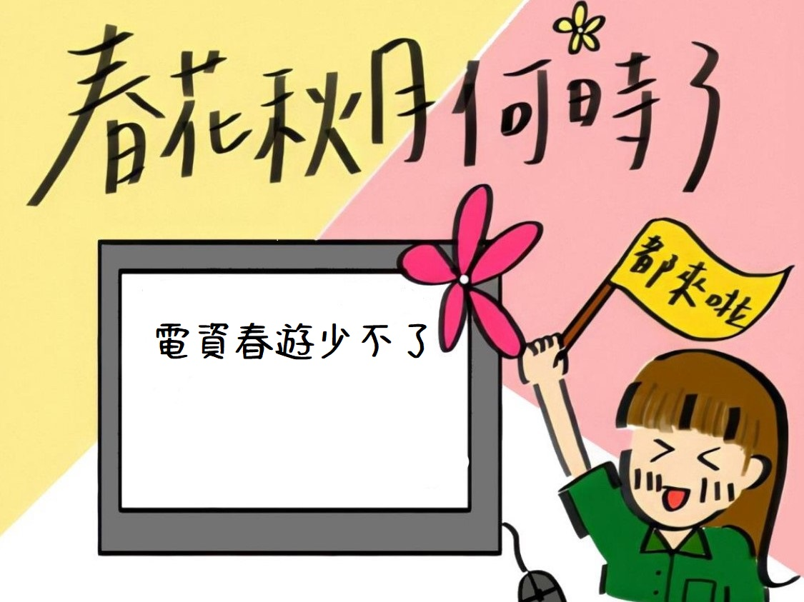
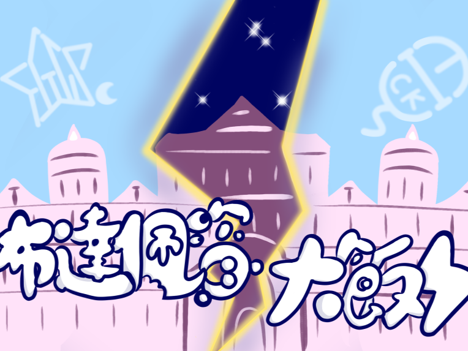
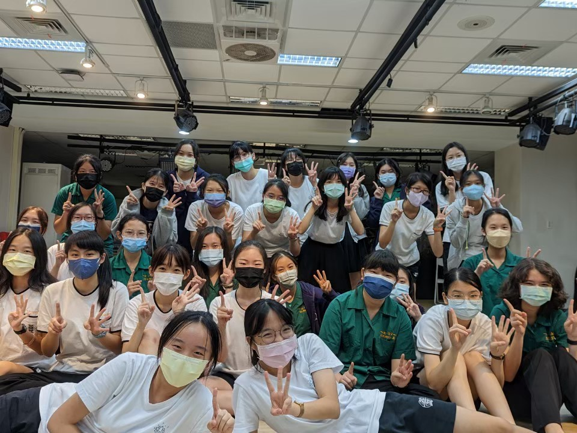
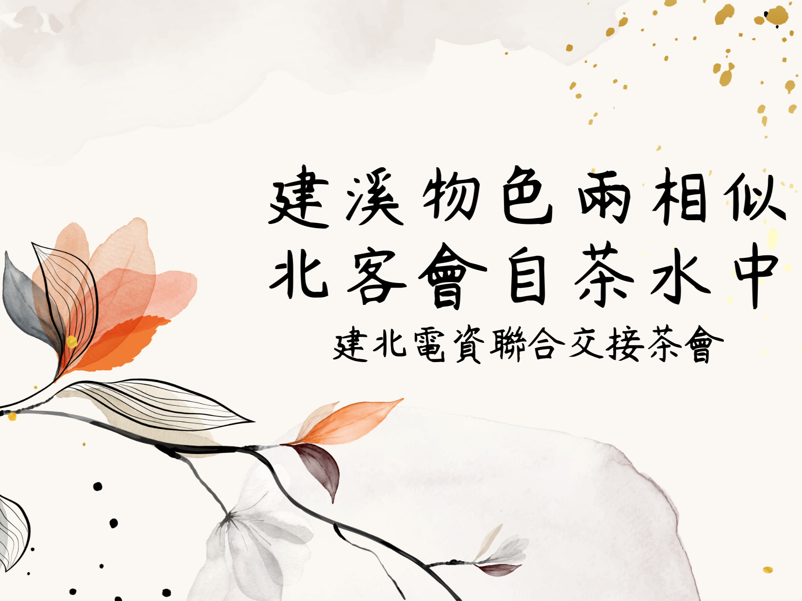
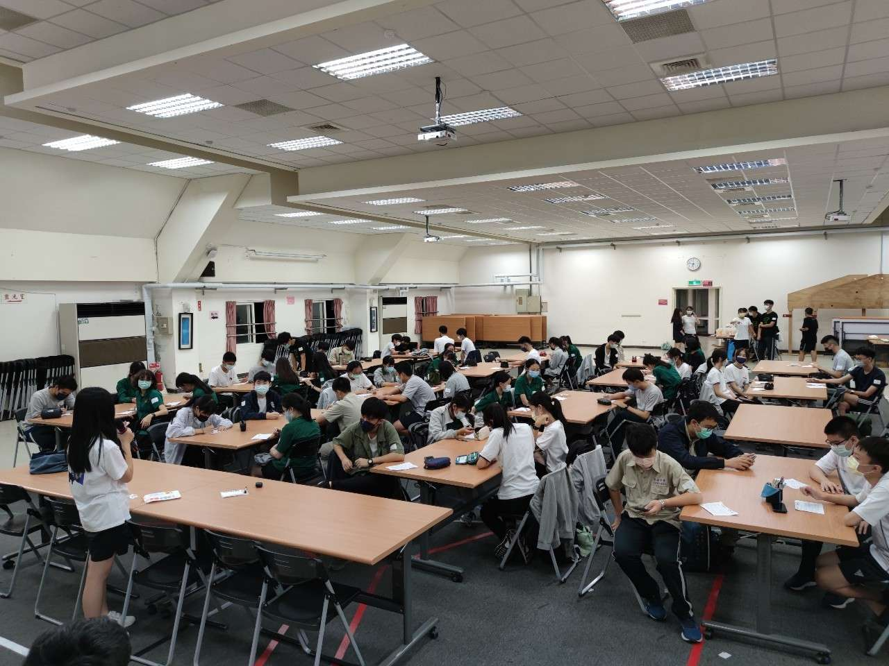
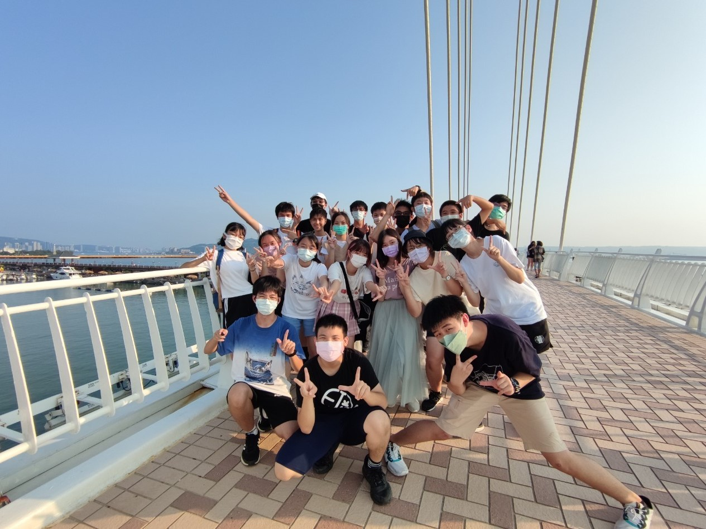

四大獵祭

春遊
是四大獵祭的第一槍，也是最後一響，象徵高一的結束與高二的開始。
這是第一個由學弟妹舉辦的活動，除了體驗幹部工作，也可參訪公司規劃未來。一整天由大地遊戲和參訪公司兩大活動組成，最後由教唱社歌作結。
活動中不僅能更清楚了解資訊業未來走向，也能認識新朋友，同時也為往後幹部生涯做準備，總之，參加絕對不後悔－春花秋月何時了，電資春遊少不了。
這是第一個由學弟妹舉辦的活動，除了體驗幹部工作，也可參訪公司規劃未來。一整天由大地遊戲和參訪公司兩大活動組成，最後由教唱社歌作結。
活動中不僅能更清楚了解資訊業未來走向，也能認識新朋友，同時也為往後幹部生涯做準備，總之，參加絕對不後悔－春花秋月何時了，電資春遊少不了。

暑訓
暑訓是目前建北電資唯一對外招生的活動，對象是剛考完會考的高一新鮮人（應屆畢業生、不限學校）。我們會在活動中教授些許程式、資訊相關的課程，也會有一次前往公司參訪的體驗，非常適合即將步入高中的新生探索對資訊的興趣喔！除了課程以外還有我們精心設計的各個活動，等待你的發掘喔！

秋遊
秋遊是一個為期一天的活動，是除了迎新以外最先能認識同屆跟學長姊的地方喔！在這活動當中，我們會主要會一起玩許多遊戲，並且一同烤肉外加看到有人被炎上！是一個可以完美凝聚彼此向心力的活動喔！學弟妹來烤肉啦～

寒訓
四大獵祭中的第三項，屬建北電資社員才能參加的活動！為期六或七天的活動，共計會有五到六門課，活動亦然，裡面會有rpg、假案、邏輯遊戲等等，等你來發現挑戰。這是高一最後一次體驗大型活動，同時亦為高二的社員辦大型活動的最後一次，機會難的，參加過暑訓我們非常歡迎再體驗更進階的寒訓，而來不及報到暑訓的學弟妹們，千萬不要錯過寒訓了!活動中學習豐富的資訊知識，遊玩有趣的活動，讓你擁有個豐富，令人生羨的寒假生活!
其他活動

北資社慶
社慶介紹社慶介紹社慶介紹社慶介紹社慶介紹社慶介紹社慶介紹社慶介紹社慶介紹社慶介紹社慶介紹社慶介紹社慶介紹社慶介紹社慶介紹社慶介紹社慶介紹社慶介紹社慶介紹社慶介紹社慶介紹社慶介紹社慶介紹社慶介紹社慶介紹社慶介紹社慶介紹社慶介紹

茶會
茶會是一個很輕鬆的活動，雖然叫做茶會，但茶會其實沒有喝茶拉~而是在認識平常不太有機會遇到的友校朋朋悶，透過各校簡介以及之後的公關時間聊天和玩遊戲加深與對方的羈絆，再在下午一起合作解謎和團內的朋朋們更熟悉！茶會認識了很多外校同伴們，雖然很可惜不是實體見面，不過還是獲得很多新朋友們！

小迎新
小迎新是建北電資27屆首辦的活動，目的是讓學弟妹們在剛進到社團後可以彼此互相認識以及認識建北電資這個團體。在放學後的幾個小時中，會有社團介紹、課程介紹、幹部介紹幾個環節，接下來就是讓大家互相認識的小遊戲，最後最後是大家最期待的麥當勞環節，吃麥當勞是建北電資的傳統，學弟妹們就要體驗一下入境隨俗的感覺啦～

社遊
建北電資社員最期待的莫過於社遊啦！在活動較少的空檔，建北電資高二社員會計畫社遊，共同討論社遊地點與活動，在社遊中可以更認識彼此，也增加許多有趣的回憶！不只是在高二時期可以舉辦社遊，在未來的路上，有著濃厚情感的建北電資也會相約出遊的！